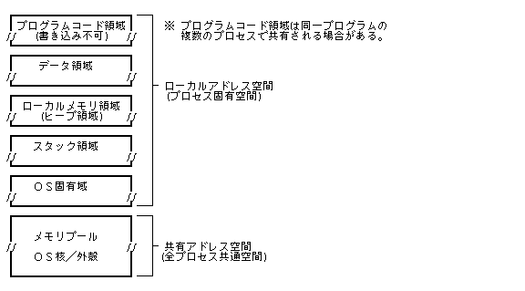

Підсистема управління процесами та задачами надає всі необхідні функції для реалізації однокористувацької багатозадачної/багатопроцесної операційної системи.
Процес (Process) — це базова одиниця управління програмою з боку ОС. В системі може одночасно існувати кілька процесів.
Задача / потік (Task) — це одиниця виконання коду. Кожен процес містить одну або кілька задач, які виконуються паралельно за допомогою планувальника на основі пріоритетів та квантування часу (Time-Sharing).
Кожен процес має власне ізольоване віртуальне адресне середовище (Address Space), як показано на схематичному малюнку нижче.

Процес створюється шляхом вказівки виконуваного файла програми та ідентифікується унікальним числовим ідентифікатором процесу (PID). PID — це додатне ціле число, яке призначається послідовно в порядку зростання.
При створенні процесу автоматично запускається його головна задача (Main Task). Головна задача може породжувати додаткові підзадачі (Subtasks), завдяки чому процес може мати 1 головну задачу та 0 або більше підзадач.
Головні задачі та підзадачі узагальнено називаються задачами (Tasks). Кожна задача ідентифікується додатним ідентифікатором задачі (Task ID / TID).
При завантаженні системи спочатку створюється системний початковий процес (Init Process), який послідовно породжує всі інші необхідні процеси. Процес, створений даним процесом, називається дочірнім процесом (Child Process), а процес, що його створив — батьківським процесом (Parent Process). Системний початковий процес не має батьківського процесу. Таким чином, уся сукупність процесів у системі утворює деревоподібну ієрархічну структуру з початковим процесом у корені.
Якщо процес завершує роботу, його дочірні процеси автоматично всиновлюються батьківським процесом завершеного процесу, завдяки чому зберігається цілісність дерева процесів. Винятком є випадок завершення початкового процесу, після якого його дочірні процеси залишаються без батьківського процесу.
Визначено 4 основні стани процесу (стан процесу відповідає стану його головної задачі):
| Неіснуючий стан | (Non-Existent) | -- Процес ще не створено або вже знищено |
| Готовий до виконання | (Ready) | -- Процес готовий до роботи та очікує виділення процесорного часу (Dispatch) |
| Стан виконання | (Run) | -- Процес виконується на процесорі в даний момент |
| Стан очікування | (Wait) | -- Процес заблоковано в очікуванні події, повідомлення, таймера або вводу-виводу |
Перехід між станами здійснюється через системні виклики та діями планувальника (Dispatching / Preemption), як показано на діаграмі:
Поточний стан процесу можна отримати у вигляді наступної структури даних:
typedef struct {
UW state; /* Стан процесу */
W priority; /* Поточний пріоритет процесу (0 - 255) */
W parpid; /* PID батьківського процесу */
} P_STATE;
процес (state) всередині ,
"1" та 。

Підзадачі мають аналогічні стани та переходять за тими ж правилами.
При завершенні процесу всі його задачі автоматично припиняють виконання. , задачаЗавершення, підзадачапримусове зупиненняЗавершення, процесЗавершення та 。Завершення окремої підзадачі не призводить до завершення всього процесу.
процес, час 0 〜 255 (0 Пріоритет) Пріоритет。 ПріоритетзадачаПріоритет та 。 Пріоритет процесу та , задачаПріоритет та 。 Усі процеси та задачі розподіляються за пріоритетом на 3 класи планування:
Підзадачі також отримують власні рівні пріоритету при їх створенні.
Планування кожної задачі здійснюється відповідно до її пріоритету:
Планування здійснюється суворо за пріоритетом (0 — найвищий пріоритет). Задачі з однаковим пріоритетом плануються циклічно за алгоритмом Round-Robin.
У цій групі застосовується загальне циклічне планування, де значення пріоритету визначає відносну частоту виділення процесорного часу (128 — найвищий пріоритет у групі). Це гарантує відсутність голодування для задач з низьким пріоритетом.
Аналогічно до групи 1, здійснюється циклічне планування для фонових задач (192 — найвищий пріоритет у даній групі).
Порядок роботи глобального планувальника задач:
Пріоритетготові задачі, Стан готовності (Ready)задача, Пріоритетта переводить її в Стан виконання (Run) та , 。, 2. 。
Групі Round-Robin 1 готові задачі, Стан готовності (Ready)задача, Пріоритет, задачаСтан виконання (Run) та , (Пріоритет та)。 , 2. 。
Групі Round-Robin 2 готові задачі, Стан готовності (Ready)задача, Пріоритет, задачаСтан виконання (Run) та , (Пріоритет та)。 , із стану 。
Зазвичай група абсолютного пріоритету використовується для системних ядерних та системних систем реального часу (Real-Time System Processes), а стандартні прикладні програми використовують групи Round-Robin 1 або 2.
Зміна пріоритету вже створеного процесу або задачі дозволена лише у межах її початкової групи (зміна групи планування заборонена).
Для кожного процесу система зберігає наступне середовище виконання (Execution Environment):
При створенні нового дочірнього процесу викликом cre_prc() його початкове середовище ініціалізується наступним чином:
| PID власного, батьківського та дочірніх процесів | PID власного та батьківського процесів |
| Початковий пріоритет процесу | Пріоритет, вказаний при створенні |
| Системні дані користувача | Успадкована системна інформація користувача батьківського процесу |
| Поточна робоча директорія / файл | Успадкована робоча директорія батьківського процесу |
| Список відкритих дескрипторів файлів | Відсутній (порожній список) |
| Черга системних повідомлень | Порожня черга |
Системні дані користувача, інформацію про користувача, який створив і використовує даний процес, , і містить наступні дані:。
Ідентифікатор імені користувача , 12 символівімені та 2 символівсимволів (32 біт) прихований ключприхованого ключа. 。 12 символівЯкщо ім'я коротше, 0 , у разі, 14 символів 0 та 。
4 , 12 символівімені та 2 символівсимволів (32 біт) прихований ключприхованого ключа. 。 12 символівЯкщо ім'я коротше, 0 , у разі, 14 символів 0 та 。
Рівень привілеїв користувача , 0 〜 15 , 0 та 。
Рівень привілеїв при віддаленому доступі до інших систем у мережі,, 1 〜 15 , 1 є найвищим привілеєм.У цьому випадку, Мережевий рівень привілеїв 0 не застосовується.
Стандартні маски та атрибути доступу, що призначаються файлам при їх створенні.
Системні дані користувача, Визначається наступною структурою:, Зчитування здійснюється системним викликом / можливе встановлення значень. Проте, приховані системні ключі не можна прочитати,, у полі прихованого ключа завжди повертається 0 .
typedef struct {
TC usr_name[14]; /*Ім'я користувача(12символів＋прихований ключ2символів)*/
TC grp_name1[14]; /*назва групи1(12символів＋прихований ключ2символів)*/
TC grp_name2[14]; /*назва групи2(12символів＋прихований ключ2символів)*/
TC grp_name3[14]; /*назва групи3(12символів＋прихований ключ2символів)*/
TC grp_name4[14]; /*назва групи4(12символів＋прихований ключ2символів)*/
W level; /*рівень користувача(0〜15)*/
W net_level; /*мережевийрівень користувача(1〜15)*/
} P_USER;
Початковий процес системи Системні дані користувача, спочатку отримує фіксовані системні налаштування,, а після цього,, коли користувача авторизовано,, реальні дані Системні дані користувачавстановлюються в системі.
Створення процесу виконується шляхом вказівки , цільового файла, Початковий пріоритет процесу, та початкового повідомлення.
Перший виконуваний запис програми у файлі стає кодом нового процесу. Виконуваний запис , повинен бути першим у файлі.
Повідомлення задається вказівником на структуру:。 Вона має аналогічний формат до міжпроцесних повідомлень.
typedef struct {
W msg_type; /*Тип повідомлення*/
W msg_size; /*Розмір повідомлення(байтів)*/
UB msg_body[n]; /*Тіло повідомлення(msg_size байт)*/
} MESSAGE;
Створений процес може приймати повідомлення у такому вигляді:2один із двох форматів:,
можна отримувати повідомлення. (Проте, Формат-B , реалізовано у вигляді стандартної бібліотеки C)。
MAIN() та main() повернення з функції означає завершення процесу,,
ext_prc() що еквівалентно виклику ext_prc().
Код завершення , Успішне виконаннязаписується в повідомлення про завершення , і надсилається батьківському процесу.
W MAIN (MESSAGE *msg)
/* MESSAGE *msg; Вказівник на структуру повідомлення */
{
< Виконуваний код програми >
return code;
}
msg_type дозволяє приймати всі повідомлення незалежно від типу.
W main (W ac, TC **argv)
/* W ac; Кількість аргументів командного рядка */
/* TC **argv; Вказівник на масив рядків аргументів */
{
< Виконуваний код програми >
return code;
}
Якщо початкове повідомлення має msg_type = 0 лише у цьому випадку,
Форматзастосовується цей формат, , У цьому випадку msg_body[] TNULL закінчується на
1 символіврядоквважається завершальним нулем.
символіврядокПорожня чергарозділяється пробілами, на окремі елементи аргументів.
У програму , елементів символіврядокрядок та та 。
msg_body[] TNULL якщо не закінчується нулем,,
останній символів TNULL вважається завершальним нулем.
Формату цьому випадку, Якщо початкове повідомлення
msg_type ≠ 0 тоді, ac= 0, *argv＝NULL приймає значення,
повідомлення не може бути прийняте.

main()структура аргументів у Оскільки процес містить кілька задач,, вони можуть виконуватися паралельно. Задача , виконується послідовно,, але асинхронно можуть викликатися обробники(функції)виконуються як переривання.
Функція, яка викликається асинхронно при надходженні міжпроцесного повідомлення.
Функція, яка асинхронно обробляє внутрішні помилки та апаратні винятки в контексті процесу.
функціїпроцес та , у його адресному просторі Порожня черга , та , без обмежень на системні виклики. Після завершення , повертається в точку переривання , або здійснює прямий перехід.
Обробник повідомлень (Message Handler)Детальніше про 「1.2.3 Обробник повідомлень (Message Handler)」, Обробник виняткових ситуацій (Exception Handler)Детальніше про 「1.10 Загальне системне управління」 див. у відповідному розділі.
Під час виконання процес може отримати статистичну інформацію про використання ресурсів за наступною структурою P_INFO:
typedef struct {
UW etime; /* Загальний час існування (у секундах) */
UW utime; /* Накопичений час CPU процесу (у мс) */
UW stime; /* Накопичений системний час CPU ядра (у мс) */
W tmem; /* Загальний віртуальний обсяг пам'яті (у байтах) */
W wmem; /* Зайнята фізична оперативна пам'ять (у байтах) */
W resv[11]; /* Зарезервовано для системного розширення */
} P_INFO;
utime та stime , міститься у процесі,,
час задачачас та 。
Таким чином,, завершується,задачачас 。
utime та stime сума цих полів ,
є повним накопиченим часом CPU час та 。
typedef struct {
UW state; /* Стан процесу */
W priority; /* Поточний пріоритет процесу (0 - 255) */
W parpid; /* PID батьківського процесу */
} P_STATE;
typedef struct {
TC usr_name[14]; /* Ім'я користувача (12 символів + 2 приховані) */
TC grp_name1[14]; /* Назва групи 1 (12 символів + 2 приховані) */
TC grp_name2[14]; /* Назва групи 2 (12 символів + 2 приховані) */
TC grp_name3[14]; /* Назва групи 3 (12 символів + 2 приховані) */
TC grp_name4[14]; /* Назва групи 4 (12 символів + 2 приховані) */
W level; /* Рівень привілеїв користувача (0 - 15) */
W net_level; /* Мережевий рівень привілеїв (1 - 15) */
} P_USER;
typedef struct {
UW etime; /* час (у секундах) */
UW utime; /* Час CPU процесуCPUчас */
/* (OSвсередині час) */
/* (міліу секундах) */
UW stime; /* Системний час CPU ядраCPUчас */
/* (міліу секундах) */
W tmem; /* та */
/* (байтодиниця) */
W wmem; /* Фізична оперативна пам'ять */
/* (байтодиниця) */
W resv[11]; /* Зарезервовано */
} P_INFO;
#define TERM_NRM 0x0000 /* Примусове завершення лише вказаного процесу */ #define TERM_ALL 0x0001 /* Завершення процесу разом із дочірніми */
#define P_ABS 0x0000 /* Абсолютний пріоритет (≧0) */ #define P_REL 0x0001 /* Відносний пріоритет */ #define P_TASK 0x0002 /* задача та */
#define P_WAIT 0x2000 /* Стан очікування (Wait) */ #define P_READY 0x4000 /* Стан готовності (Ready) */ #define P_RUN 0x8000 /* Стан виконання (Run) */
|
WERR cre_prc(LINK* lnk, W pri, MESSAGE* msg)
LINK* lnk Цільовий реальний об'єкт / файл
W pri Пріоритет процесу
0 ≦ pri ≦ 255 Довільний пріоритет
= -1 Поточний процес та такий самийПріоритет
MESSAGE* msg Стартове повідомлення процесу
＞0 Успішне виконання(Створений процес ID) ＜0 Помилка (Код помилки)
Виконуваний запис програми у вказаному об'єкті , процес та 。 Одночасно створюється та запускається головна задача.
「1.1.6 Створення та запуск процесів (Process Creation)」 див. у відповідному розділі.
ER_ACCES : Немає прав доступу на виконання файла (lnk). ER_ADR : Помилка доступу до адреси пам'яті (lnk, msg). ER_BUSY : Файл (lnk) вже відкрито іншим процесом у монопольному режимі. ER_IO : Сталася помилка вводу-виводу при читанні файла. ER_NOEXS : Файл (lnk) не існує. ER_NOFS : Файлова система, якій належить файл (lnk), не підключена. ER_NOMEM : Недостатньо оперативної пам'яті для створення процесу. ER_NOSPC : Перевищено системний ліміт кількості процесів. ER_PPRI : Неприпустиме значення пріоритету (-1 або поза 0-255). ER_REC : У файлі відсутній виконуваний запис програми або його вміст пошкоджено. ER_SZOVR : Розмір стартового повідомлення перевищує системний ліміт.
|
VOID ext_prc(W code)
W code Завершення процесукод
Не повертає управління
Поточний процес Успішне виконаннязавершується,,
вказаний code у складі повідомлення Успішне виконаннянадсилається батьківському процесу.
Усі ресурси та файли процесу
(cre_sem якщо не вказано спеціальних прапорців DELEXIT збереження,)за винятком окремих випадків,,
автоматично звільняються системою.
Помилки не виникають.
|
ERR ter_prc(W pid, W code, W opt)
W pid PID цільового процесу
> 0 Будь-який процес
= 0 Поточний процес(Заборонено вказувати:Помилка)
= -1 Батьківський процес
W code Код примусового завершення
W opt Атрибут примусового завершення
(TERM_NRM ‖ TERM_ALL)
TERM_NRM вказаний процеспримусове зупиненняЗавершення。
TERM_ALL вказаний процестапроцеспримусове зупинення
Завершення。Батьківський процеспроцесВказати
у цьому випадку, Поточний процеспримусове зупиненняЗавершення。
У цьому випадку, вказаний процеспримусове зупиненняЗавершенняповідомлення
не надсилаються.
＝0 Успішне виконання ＜0 Помилка (Код помилки)
вказаний процеспримусове зупиненнязавершується,,
вказаний code
у складі повідомлення примусове зупиненняЗавершенняповідомленнявказаний процесБатьківський процес。
Заборонено примусово завершувати процеси з вищим рівнем привілеїв, ніж у поточного процесу.
ER_SELF: Вказано власний процес (pid = 0 або поточний PID). ER_NOPRC: Процес із вказаним PID не існує. ER_LEVEL: Спроба зупинити процес із вищим рівнем привілеїв. ER_PAR: Неприпустимий атрибут прапорця opt.
|
WERR chg_pri(W id, W pri, W opt)
W id PID цільового процесу або задачі ID
W pri Новий пріоритет
W opt Атрибут пріоритету
(P_ABS ‖ P_REL) | [ P_TASK ]
P_ABS Абсолютне значення：вказаний Пріоритетзмінюється на。
P_REL Відносне значення：(Поточний пріоритет)＋pri змінюється на。
T_TASK задача та 。
≧0 Успішне виконання(Пріоритет після зміни 0〜255)
P_TASK Вказано прапор id пріоритет задачі
P_TASK ВказатиНемає id пріоритет головної задачі процесу
＜0 Помилка (Код помилки)
вказаний Пріоритет процесу та задачзмінюється.
P_TASK Вказатиякщо прапор відсутній :
id = 0: Змінює пріоритет усіх задач у поточному процесі. id = -1: Змінює прі ритет усіх задач у батьківському процесі. id > 0: Змінює пріоритет усіх задач у процесі із заданим PID.
P_TASK Вказатиу випадку виконання
id = 0: Змінює пріоритет поточної задачі.
id > 0: Змінює пріоритет задачі із вказаним TID.
Дозволено змінювати пріоритет лише тих задач, які належать поточному процесу.
Вказати можливоПріоритетдіапазон пріоритету:, задачапроцесПоточний пріоритетвсередині та 。
ER_NOPRC : процес(id)не існує. ER_ID: Задача id не існує або належить іншому процесу. ER_PPRI: Новий пріоритет виходить за межі поточної групи. ER_PAR : Неприпустимі параметри.(opt=P_ABS,P_REL,P_TASKкрім вказаноговказаний)。
|
WERR prc_sts(W pid, P_STATE* buff, TC* name)
W pid PID цільового процесу
> 0 Будь-який процес
= 0 Поточний процес
= -1 Батьківський процес
P_STATE* buff Буфер для збереження структури стану процесу
NULL Не зберігати
TC* name Назва процесу(Назва об'єкта / файла)буфер для збереження(максимальнийНазва об'єкта / файла+1символівсимволів)
NULL Не зберігати
＞0 Успішне виконання(Вказатипроцес ID) ＜0 Помилка (Код помилки)
Отримує поточний стан виконання вказаного процесу.
pid = 0, buf = NULL, name = NULL та Отримання PID поточного процесу (Get Process ID)також використовується.
ER_ADR : Адреса пам'яті(buff,path)Немає доступу до адреси пам'яті. ER_NOPRC: Процес із вказаним PID не існує.
|
ERR chg_usr(P_USER* buff)
P_USER* buff Буфер із новими даними користувача
＝0 Успішне виконання ＜0 Помилка (Код помилки)
Змінює системну інформацію про користувача поточного процесу на вказані у буфері buff значення. Змінені налаштування автоматично успадковуються всіма новоствореними дочірніми процесами.
Цей системний виклик дозволено виконувати лише привілейованим системним процесам, звичайні прикладні додатки не можуть його викликати.
ER_ADR : Адреса пам'яті(buff)Немає доступу до адреси пам'яті. ER_PAR : Неприпустимі параметри.(Системні дані користувачанекоректне значення.)。
|
WERR get_usr(W pid, P_USER* buff)
W pid PID цільового процесу
> 0 Будь-який процес
= 0 Поточний процес
= -1 Батьківський процес
P_USER* buff Буфер для збереження структури інформації про користувача
NULL Не зберігати
＞0 Успішне виконання(Вказатипроцес ID) ＜0 Помилка (Код помилки)
вказаний процесСистемні дані користувачаОтримання。 Прочитане ім'я користувачатаназва групи 1 〜 4 прихований ключзавжди 0 приймає значення, та 。
pid = 0, buf = NULL та Отримання PID поточного процесу (Get Process ID)також використовується.
ER_ADR : Адреса пам'яті(buff)Немає доступу до адреси пам'яті. ER_NOPRC: Процес із вказаним PID не існує.
|
ERR get_inf(W pid, P_INFO* buff)
W pid PID цільового процесу
> 0 Будь-який процес
= 0 Поточний процес
= -1 Батьківський процес
P_INFO* buff Буфер для збереження структури статистики процесу
＝0 Успішне виконання ＜0 Помилка (Код помилки)
Зчитує розширену системну статистику виконання вказаного процесу.
ER_ADR : Адреса пам'яті(buff)Немає доступу до адреси пам'яті. ER_NOPRC: Процес із вказаним PID не існує.
|
WERR cre_tsk(FP entry, W pri, W arg)
FP entry Адреса точки входу функції підзадачі (Entry Point) W pri Пріоритет підзадачі W arg Аргумент передачі даних підзадачі (Argument)
＞0 Успішне виконання(Створена підзадача ID) ＜0 Помилка (Код помилки)
Створює новий потік виконання (підзадачу) у контексті поточного процесу та запускає його.
Пріоритет підзадачі , власного Початковий пріоритет процесувсередині Вказати можливо。 підЗадача Форматфункції та 。
VOID subtask(W arg)
{
/* arg cre_tsk() вказаний Параметр */
< Виконуваний код підзадачі >
/* задачаЗавершення */
ext_tsk();
}
Підзадачу return закінчується на та 。
ER_ADR: Неприпустима адреса точки входу entry. ER_PPRI : Пріоритет(pri)власного Початковий пріоритет процесупоточної групи планування. ER_LIMIT: Перевищено системний ліміт кількості підзадач. ER_NOMEM : Недостатньо оперативної пам'яті.
|
VOID ext_tsk()
Завершує виконання поточної задачі/потоку.
Якщо завершується головна задача, процес також припиняє свою роботу.
|
ERR ter_tsk(W tskid)
W tskid TID цільової задачі
＝0 Успішне виконання ＜0 Помилка (Код помилки)
Примусово завершує вказану підзадачу в контексті поточного процесу.
Вказати можливоЗадача , Поточний процесвсерединіпідзадача 。 власного задачатазадачаВказати та 。
ER_ID: Неприпустимий або неіснуючий ідентифікатор задачі tskid.
|
ERR slp_tsk(W time)
W time Час таймауту очікування (у мілісекундах)
> 0 Очікувати вказаний інтервал часу (у мс)
= -1 Нескінченне очікування до сигналу пробудження
＝0 Успішне виконання ＜0 Помилка (Код помилки)
Переводить поточну задачу в стан очікування пробудження (Sleep Wait).
time вказаний Час таймауту очікування (у мілісекундах)пройде вказаний інтервал часу або,
з боку іншої задачі Пробудження задачі (Wakeup Task)при отриманні виклику Стан очікування (Wait)стан очікування знімається.
ER_NONE : Час таймауту очікування (у мілісекундах)Час таймауту минув,, але задачу не розбуджено. ER_MINTR : Обробник повідомлень (Message Handler)через активацію обробника , очікування перервано. ER_PAR: Неприпустиме значення інтервалу часу time.
|
ERR wup_tsk(W tskid)
W tskid TID цільової задачі
＝0 Успішне виконання ＜0 Помилка (Код помилки)
tskid вказаний задачаСтан очікування (Wait)якщо вона перебувала в очікуванні,, знімає стан очікування.
вказаний задачаСтан очікування (Wait)якщо задача не чекала,, запит додається в чергу.
ВказатиЗадача Поточний процесвсерединізадача 。 процеста переводить її в та 。, власного задачаВказати та 。
ER_ID: Неприпустимий або неіснуючий ідентифікатор задачі tskid. ER_LIMIT: Перевищено максимальну кількість накопичених запитів пробудження.
|
WERR can_wup(W tskid)
W tskid TID цільової задачі
> 0 Будь-яка задача
= 0 власного задача
≧0 Успішне виконання(Кількість скасованих запитів у черзі) ＜0 Помилка (Код помилки)
tskid Скасовує всі накопичені в черзі запити пробудження для вказаної задачі.
Дозволено змінювати пріоритет лише тих задач, які належать поточному процесу.
ER_ID: Неприпустимий або неіснуючий ідентифікатор задачі tskid.
|
ERR dly_tsk(W time)
W time Інтервал затримки (у мілісекундах >= 0)
＝0 Успішне виконання ＜0 Помилка (Код помилки)
власного задачавказаний час лишеСтан очікування (Wait)переводиться у відповідний стан.
time = 0 вказаний у разі,
та 。
Тобто,, стан задачі Стан виконання (Run)із стану , Стан готовності (Ready) та 。
ER_MINTR : Обробник повідомлень (Message Handler)через активацію обробника , очікування перервано. ER_PAR: Неприпустиме значення інтервалу часу time.
|
W get_tid()
Немає
Повертає числовий ідентифікатор поточної задачі (TID).
Помилки не виникають.